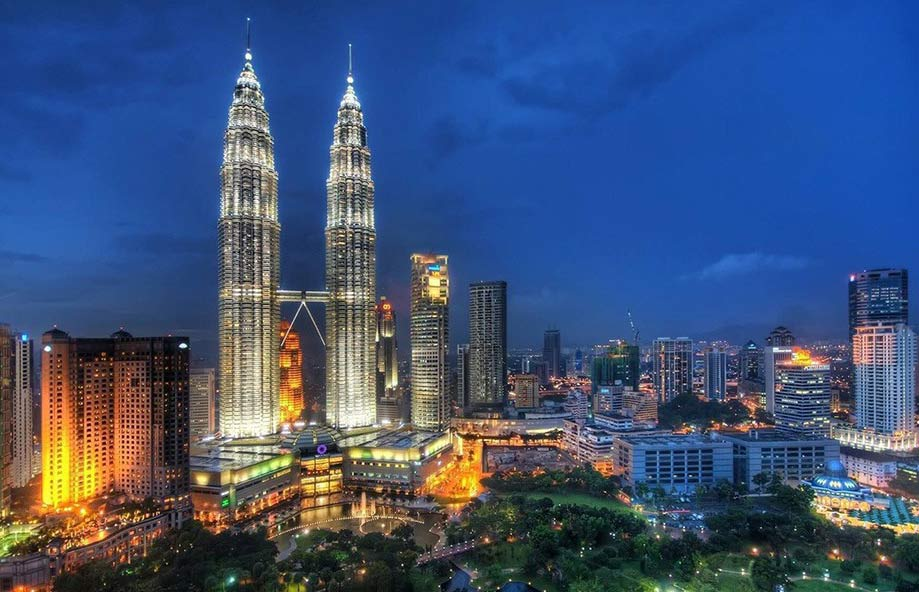

About Kuala Lumpur
Kuala Lumpur, the capital city of Malaysia, is known for its modern skyline dominated by the iconic Petronas Twin Towers. It's a vibrant city that offers a mix of cultures, cuisines, and attractions, making it a popular destination for tourists from around the world.
Top Attractions
Petronas Twin Towers
The Petronas Twin Towers are the tallest twin towers in the world and a symbol of Kuala Lumpur. Visitors can enjoy breathtaking views from the observation deck and the sky bridge that connects the two towers.

Batu Caves
Batu Caves is a limestone hill featuring a series of caves and cave temples. It's a major tourist attraction and a place of worship for Hindus, known for the large statue of Lord Murugan and the steep 272-step climb to the temple cave.

KL Bird Park
KL Bird Park is the world's largest free-flight walk-in aviary. It's home to over 3,000 birds of various species, offering visitors an opportunity to observe and interact with these beautiful creatures in a natural setting.

Cultural Highlights
Kuala Lumpur is a melting pot of cultures, with influences from Malay, Chinese, Indian, and various indigenous groups. Visitors can explore diverse neighborhoods, enjoy traditional festivals, and taste a wide variety of local cuisines.